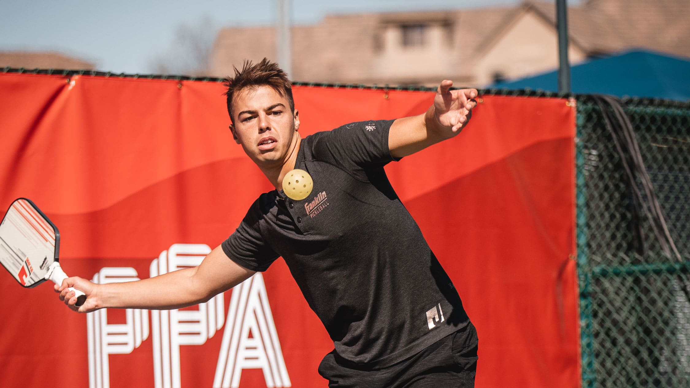

Go Beyond
If you're serious about pickleball, this is the page for you. We'll cover some advanced strategies, and how to get more involved with this great sport.
Advance Your Game
Here are some strategies that you'll need to use if you want to level up your game:
1. Control the Net. This is the most important strategy in pickleball.
If you control the net, you can keep your opponents back and not allow them to
hit neutralizing shots, while you attack the ball out of the air, keeping them
on the defensive. Whenever you can, get up to the kitchen line. Don't be tempted
to back off the line, like many beginners do.
2. The Third Shot Drop. This is the most important shot in doubles. Without
hitting a neutralizing shot, you won't be able to come up to the net (the most important strategy).
By hitting a soft-paced ball that lands in or near your opponent's kitchen, you gain time to get
up to the net without the risk of your opponent attacking you. Practice this shot the most. You will reap the rewards.
3. Dink. Dinking is primarily the way high-level games are played. You need to master
this skill to keep yourself in points and allow yourself to find attackable shots.
Dinks are soft neutrally placed shots around the kitchen. Their purpose is to not give
your opponent a ball to attack you with. If they ambitiously attack a well-placed dink
of yours, it will be traveling upward, and you can hit down on it with power. Or if they
have too much pace on it, it will fly out of bounds and you don't even need to touch it.
4. Let Out Balls Go. As stated above, attacks coming toward you will sometimes be quick and high,
sailing out of bounds. Knowing which balls to let go is an incredibly useful skill.
Many players will still hit balls that would otherwise go out, putting themselves at an avoidable
disadvantage. Mastery of this skill will put you miles ahead in winning rallies than if you were to hit every ball that came your way.
Practice these strategies often and always strive to improve, you will see amazing results when you keep at it!
Get Involved
First of all, it's fun! Pickleball is growing so quickly not just because of its accessibility, but its addictiveness.
I'm sure if you've come to this site because you already play or you're interested in playing. But, if for some reason you think pickleball
just isn't for you, let me try to change your mind: You should try pickleball if:
1. You don't usually play sports. Even if you are a complete beginner in athletics,
pickleball is the best way to get started.It is so easy to hold rallies and complete a game.
Even if all four players have limited athletic experience, instant fun is around the corner.
2. You are competitive and want to improve at what you do. Pickleball is an amazing
sport to study and improve in. Though beginner-friendly, it takes a lot of time and practice to
improve and excel at higher level play. The court size and rules make the game a lot like chess,
needing to understand angles, to think ahead, and to be very precise.
3. You are a tennis player. If you have a strong tennis background, you can very quickly excel at pickleball.
But, be wary, experienced players even with no racket sports background may have to humble you for a while before
you understand the intricacies of high-level play. But will find a lot of fun in the learning curve and understanding
how the game can be played very beautifully and excitingly
If none of these applied to you, you should still give it a go, you might be surprised!
If you are still thirsy for more information, check out the extras page for some good references. Pickle on!